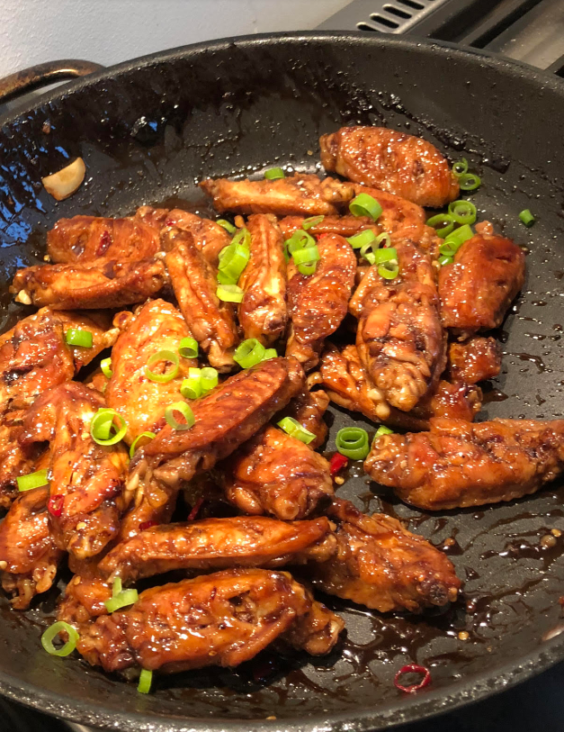

Create a conversation

When I set shape to the fonts. I don't want to follow guides. I think so is too safe. I want people to look at it. Shapes and fonts can be too frequent in the world, there is so much to forget. It's like a hole in the design. i want something that can give some reaks ions. In the work, I relied on my own intuition. "what do I feel" “what am I trying to say” “I didn't expect that” And I felt that is where the great work comes from. There is a focus on the symbols and how they are in places, to show how it can change the meaning of the sentence. The black quotation marks are one of the symbols that celebrate a greater effect of a smaller symbol. The symbol is raised from the text and makes it different around which creates a movement. This contrast sets the symbol into a conversation with the reader that provides an abstract way of telling a more interesting true story.
Design process

In order to follow a production feel in the design, I chose to keep the shapes as created the nike swoosh. Eg are the ovals that form the arc in the swoosh again to illustrate the character of industry and design processes. I used color contrasts to highlight use of the shapes. This style continues through all the designs by using different technical solutions to focus it forth.
Cola Chicken
This is a picture from a recipe I made. The recipe is cola chicken and is a Chinese recipe. It contains garlic, ginger, chilli, cola and chicken. I made the recipe together with a friend. His name is Li and he lives in the same building as me. He is from China and is very good at cooking. We cook together quite often. Oh this recipe is one of my favorites because of the salty taste along with the sweet.